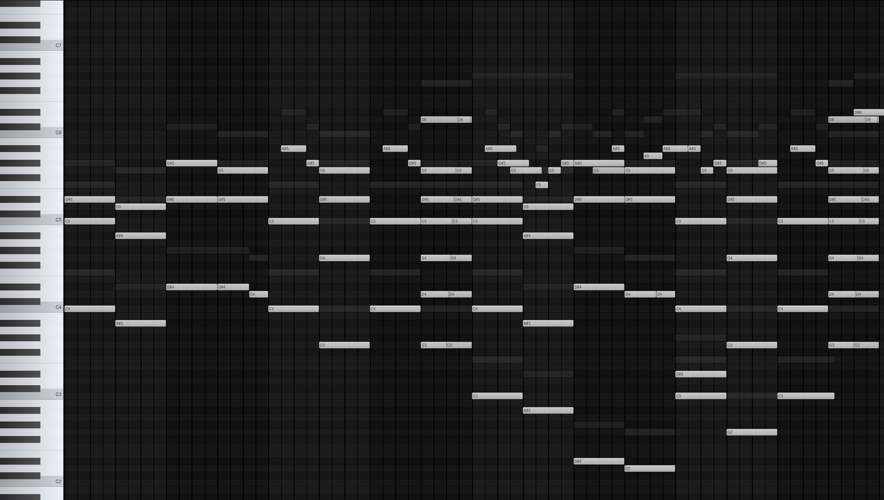
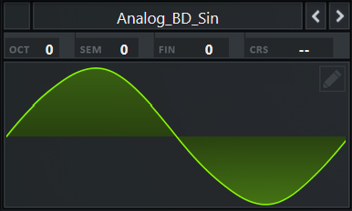
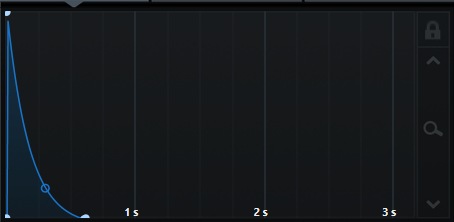

Im currently a 1st year student in the University of Limerick studying Computer Science, with hopes to move into a Bachelors in Computer Games Development.
Within Week 1, i made sure i found a team that i could group up with. Being someone inclined to do Sound Production, this was no issue as everyone was looking for someone to do the Sound. Week 1 was perhaps the least busy week, as we were just getting started.
During Week 2, me and my team began to brainstorm ideas.
We came up with a few different concepts, consisting of:
Spirits : A multiplayer half 2d and 3d game, the main idea of the game
being that once you die, you die for good.
A fighting game, where you spawn into a world
with a range of abilites and powers with stats
you cannot change but you can improve.
The fighting is skill based.
Rob's Servant : With the core theme being a Suspicious Mansion, you are Rob's personal servant and your goal
is to observe small changes in the mansion that could indicate danger to Rob.
Once again, during this week, not much was done, just brainstorming and thinking as a team.
As my role is in Sound Production, i am planning on waiting until we have established a particular art style and theme
before i begin the production.
However, this week i did find it difficult communicating with my team. As everyone is doing their own thing, not much
communication is being passed on. Im sure this will improve during oncoming weeks as we will implement different apps that allow
us to assign tasks and communicate effectively.
During Week 3, all the teams are now fully formed and ideas are beginning to be fleshed out. We have finally decided on our game idea: Rob's Servant. Whilst we havent really made anything yet, we are just mocking up what we want to see from our game, and the requirements we need to stick by.
The layout of our game is:
| Gameplay | Tone and Style | Development Vision |
|---|---|---|
The main features of the game will be:
|
|
To keep our game simple for development we will:
|
In week 4, i began creating the music we will be using in our game.
The first composition i created was for the menu music. Considering the
game is meant to have an eerie and suspensful theme, i made sure to use
instruments such as creepy synths, violins and strings that instilled that feeling.
You can listen to the first composition i created below.
 Here is the MIDI for the main melody. Click the image to view it.
For week 5, continuing working on the menu i began to search for sound effects we could use for the buttons.
Whilst searching for sounds i could use, i found it difficult to find the right one, so i decided to create my own using sound synthesis.
To create it, i started with a simple sine wave.

This is the foundation to the sound. Next, i created an envelope for it, to make it more of a "plucky" sound.

Finally, i added some very very suttle effects, such as a compressor to ensure the sound didnt go over a certain
volume threshold, and a tiny bit of reverb to create a tiny bit of room behind the sound.
I also created a higher variation for other buttons.
Some challenges i faced whilst creating these sounds is that i found it hard to think about what i wanted for the sound.
To over come this i based it off other games' menus, such as minecraft, which uses a more airy rim sound.
Using this as influence, it became much easier to think about what i wanted for the game.
Looking back on the process of how i created the sound, i also feel as if i had implemented an lfo (low frequency oscillator) it could have made the sound more interesting,
however, keeping it simple was what my team had instructed me to do.
In terms of my teams overall progress with the development of the game, im beginning to have doubts and concerns around whether or not we will complete the game.
It feels as if no one is really engaging, and that me and maybe 2 other people are the only people doing their jobs.
However, im trying to assume everyone is just so busy with working on the game that they cant engage!
Feel free to reach out for collaboration or inquiries.
Email Me